Research Article · IEEE Access · Vol. 14 · 2026
Summary
Off-the-shelf detectors miss small, low-contrast buoys in radar PPI images. This study combines radar-specific preprocessing with two small-object changes to YOLO, then checks whether the gains survive on real radar.
HSV segmentation, adaptive binarization and morphological closing clean the radar frame.
A high-resolution P2 head and an area-aware loss for boxes under 8 × 8 px.
Five YOLO models on simulator data, then external tests on real Baltic Sea radar.
1 · Introduction
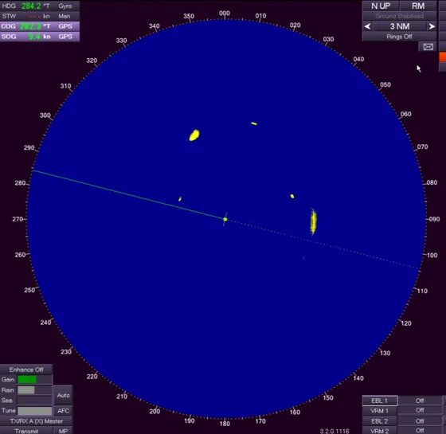
The Plan Position Indicator shows radar returns as a 2-D polar map around the own ship: the cornerstone of radar navigation in fog, at night and in heavy traffic.
1 · Introduction
Added to selected YOLO models to keep fine spatial detail for small, low-contrast objects.
Box losses of objects smaller than 8 × 8 px are weighted up, so safety-critical buoys are not under-learned.
YOLOv5s, v8s, v10s, v11s and v12s on the same 350-frame simulated dataset, raw and preprocessed.
External tests on the DAAN marine radar dataset, with an analysis of simulated-to-real transfer.
Unlike studies that address one component (clutter suppression, lightweight detection, segmentation or tracking), this work integrates preprocessing, model evaluation, P2, loss design, light backbones and real-data validation in one pipeline (Table 1).
2 · Methodology · Table 2
2 · Methodology · Algorithm 1
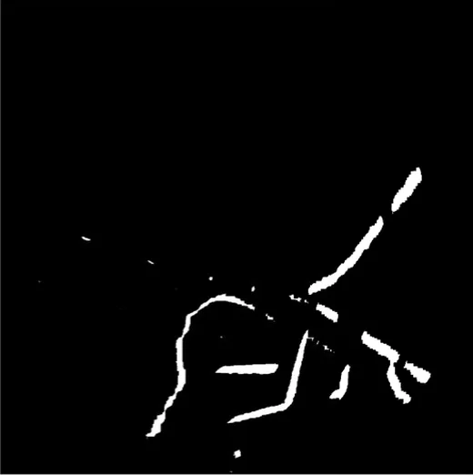
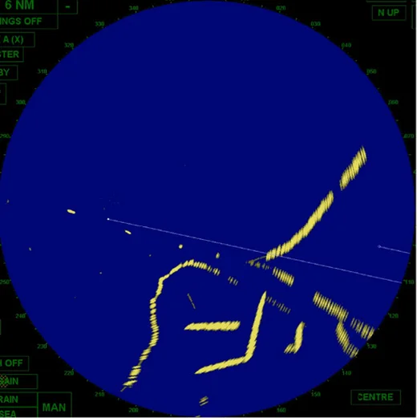
processedrawDrag the divider to compare the raw frame and the result (Fig. 3).
The HSV thresholds are stable because commercial radar displays use fixed colour lookup tables: strong echoes always fall in a narrow yellow band.
The result keeps high-intensity echoes, joins their fragments and removes the disc, range rings and interface text.
2 · Methodology · Interactive
Runs in your browser on the Fig. 3 frame. The hue range and threshold offset are chosen for this demo; the paper's exact thresholds were set empirically and are not listed.
2 · Methodology · Fig. 2
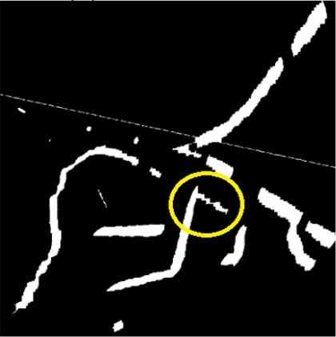
11 × 11 is dataset-specific: echo thickness, display scale and clutter differ between radars, so it should be re-tuned for other systems.
2 · Methodology · Algorithm 2
External contours of the processed frame are boxed; the box area A = w × h decides the initial class.
A < Tfixed: small, stationary echoes
Tfixed ≤ A < Ttarget: moderate, moving echoes
A ≥ Ttarget: large, stable regions
2 · Methodology
| Model | Key idea | Expected effect on radar |
|---|---|---|
| YOLOv5s | CSPDarknet53 + PANet, anchor-based head | solid baseline; fixed anchors fit variable echo shapes poorly |
| YOLOv8s | anchor-free, decoupled heads | better localization of scattered, low-contrast targets |
| YOLOv10s | ELAN backbone, efficient anchor-free design | aimed at resource-constrained, real-time use |
| YOLOv11s | refined v8 backbone / neck, SPPF, better training | robust features and generalization |
| YOLOv12s | attention-centric: R-ELAN, Area Attention (A2C2f) | larger effective receptive field, focus on informative regions |
Box loss uses Complete IoU; every model was trained with the same hyperparameters.
2 · Methodology · Fig. 4, Eqs. (8)–(10)
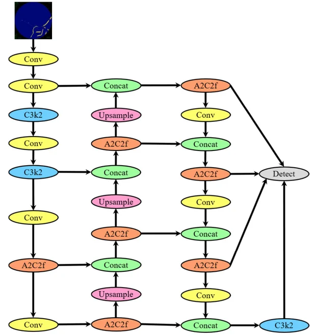
The head now predicts at P2/4, P3/8, P4/16 and P5/32. At 640 px input, P2 is a 160 × 160 map: an 8 × 8 px buoy spans 2 × 2 cells, while on P5 it covers only 0.25 × 0.25 of one cell (1/16 of its area).
2 · Methodology · Eqs. (11)–(12)
Dashed square: the 8 × 8 threshold, about the median buoy size. Loss share is a toy estimate: training instances from Table 2, half of the buoy boxes taken as small, equal per-box loss.
3 · Results
| Framework | Ultralytics 8.3.170, PyTorch 2.9 |
|---|---|
| Training GPU | RTX 5070 (12 GB) |
| Input / batch | 640 px / 16 |
| Epochs | 250 (mosaic off for last 10) |
| Optimizer | AdamW, lr 0.001429, momentum 0.9 |
| Loss gains | box 7.5 (CIoU), cls 0.5, dfl 1.5 |
| Augmentation | flip 0.5, scale 0.5, translate 0.1, HSV h/s/v 0.015/0.7/0.4 |
mAP50: mean AP over the three classes at IoU 0.5.
mAP50-95: also averaged over IoU 0.50, 0.55 … 0.95, a stricter localization test.
Latency was measured separately on a laptop RTX 3050 (6 GB), 640 × 640 input.
3 · Results · Tables 3–5
3 · Results · Tables 3–5
The largest single step: YOLOv12s buoy mAP50-95 0.321 → 0.503.
Finer features: 0.503 → 0.595.
Mainly recall: YOLOv8s buoy recall 0.843 → 0.936.
3 · Results · Fig. 7
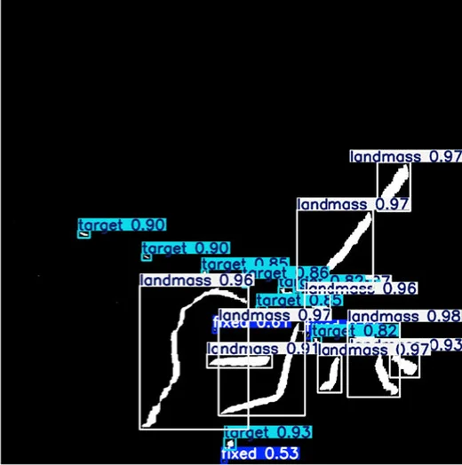
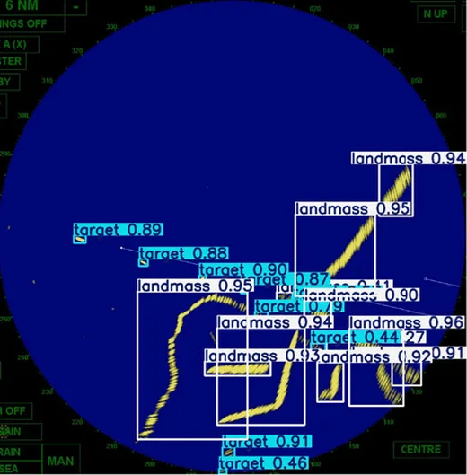
preprocessedrawPredicted boxes with confidence scores on the same scene.
3 · Results · Tables 6–7
Standard models run faster than P2 variants, the expected cost of an extra detection scale. The area-aware loss changes training, not the inference graph, so its effect on latency is small.
3 · Results · Table 8
| Model | Configuration | Layers | Params (M) | GFLOPs |
|---|---|---|---|---|
| YOLOv5s | Standard | 153 | 9.12 | 24.0 |
| YOLOv8s | Standard | 129 | 11.14 | 28.7 |
| YOLOv10s | Standard | 234 | 8.07 | 24.8 |
| YOLOv11s | Standard | 181 | 9.43 | 21.6 |
| YOLOv12s | Standard | 272 | 9.25 | 21.5 |
| YOLOv5s | Optimized | 84 | 9.11 | 23.8 |
| YOLOv8s | Optimized | 72 | 11.13 | 28.4 |
| YOLOv10s | Optimized | 106 | 7.22 | 21.4 |
| YOLOv11s | Optimized | 100 | 9.41 | 21.3 |
| YOLOv12s | Optimized | 159 | 9.23 | 21.2 |
| YOLOv8s + P2 | Standard | 160 | 10.64 | 37.0 |
| YOLOv12s + P2 | Standard | 327 | 9.38 | 28.3 |
| YOLOv8s + P2 | Optimized | 90 | 10.63 | 36.6 |
| YOLOv12s + P2 | Optimized | 189 | 9.36 | 27.8 |
"Optimized" = inference-time graph simplifications such as layer fusion. P2 barely changes the parameter count but raises GFLOPs (YOLOv8s 28.7 → 37.0): high-resolution maps are expensive to process.
3 · Results · Table 9
Best accuracy: YOLOv12s mAP50 0.917, YOLOv8s mAP50-95 0.762.
Fastest and lightest: 1.8 GFLOPs, 9.1 ms, small accuracy cost.
Best balance: 0.751 mAP50-95 with 5.2 M params and 7.1 GFLOPs.
4 · Real-Data Validation · Figs. 9–10
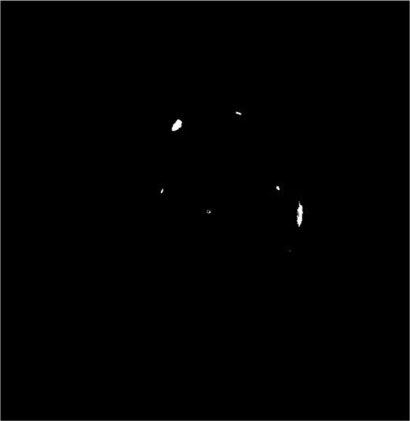
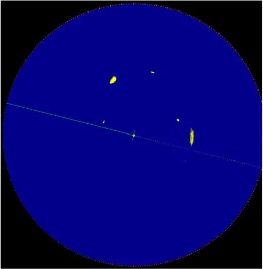
preprocessedcropped4 · Real-Data Validation · Table 10
| Configuration | TP | FP | FN | mAP50 | mAP50-95 |
|---|---|---|---|---|---|
| Raw | 3301 | 41 | 1339 | 0.6983 | 0.6750 |
| Preprocessed | 4296 | 230 | 344 | 0.9149 | 0.7243 |
| Preprocessed + P2 | 4306 | 315 | 334 | 0.9169 | 0.7406 |
| Preprocessed + P2 + Loss | 4329 | 315 | 311 | 0.9218 | 0.7451 |
False alarms rise (41 → 315), but missed detections fall far more (1,339 → 311): a better trade-off for navigation safety.
4 · Real-Data Validation · Fig. 11
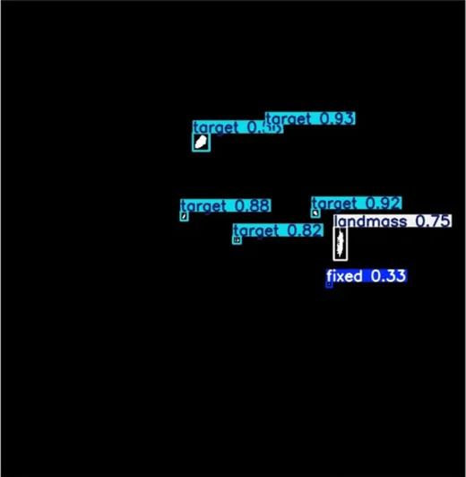
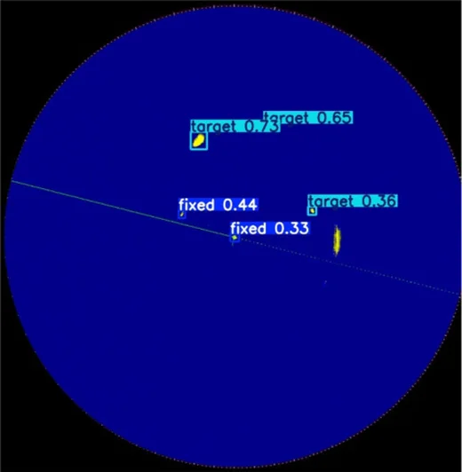
full modelraw modelRaw model: YOLOv12s trained on raw frames finds a few targets with low confidence (0.36–0.73).
Full model: YOLOv12s + P2 + area-aware loss on the preprocessed frame finds more targets with higher confidence (0.82–0.93).
5 · Discussion
Preprocessing makes buoys visible, P2 keeps them resolvable, the loss keeps them from being ignored. Larger classes do not suffer.
P2 variants are slower and need more GFLOPs; lightweight backbones such as GhostNet are a real-time alternative.
On DAAN the full configuration reduces misses and finds weak echoes, suggesting it learns radar structure, not simulator artefacts.
Simulated and display-captured images; one external domain; HSV thresholds and the 11 × 11 kernel depend on the display and radar.
6 · Conclusion
6 · Conclusion
References
The paper lists 46 references. Figures are reproduced from the article, published under a CC BY 4.0 licence.